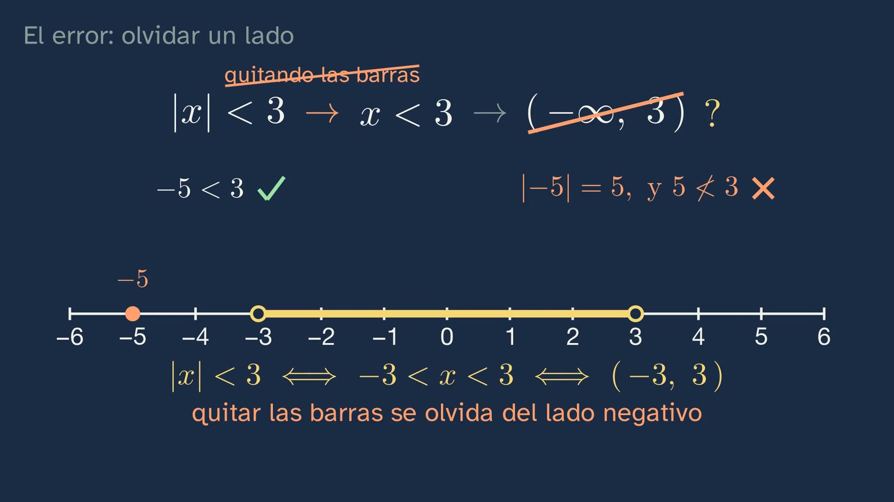

Intervals and absolute value: distances on the number line
In a nutshell
Class 3 filled the number line: every point is a real number. This one asks which numbers are close to a given one, and how to say so with complete precision. It starts by retrieving the midpoint from the first class (between two numbers there is always room for another), which is needed twice today, and by correcting the three exercises from the previous class; the third, which is closer to π, 3.14 or 22/7?, leaves the class its first distance: what matters is how far each one is off, not which way. The hook is a made-up 20 mm part, "plus or minus a tenth of a millimetre". The parts that pass form a stretch of the line, the closed interval [19.9, 20.1], because "plus or minus a tenth" means "at most a tenth", and the endpoint counts. Then, the edge: with the age of majority in the Spanish Constitution (art. 12), minors are [0, 18) and adults, [18, +∞). The class asks what the highest age of a minor is, and the answer is that there isn't one: between any candidate and 18 there is room for their midpoint, and 17.9 recurring is already 18 (class 1). The interval of minors has no last number; that of adults does have a first one. Three panels explain why the edge "has an owner": with both endpoints closed, on your 18th birthday you would be a minor and an adult at once; with both open, neither. With the four kinds of interval written down, the absolute value arrives: subtracting tells you which way and how far, and the absolute value keeps the how far. |x| is the distance from x to 0, and |x − a|, the distance between a and x, checked in both cases. The two ideas come together in the window: |x − 20| ≤ 0.1 is the part's interval told with its centre and its radius, and in general |x − a| ≤ r is [a − r, a + r]; the open one is called the neighbourhood with centre a and radius r. The class stops to read the formula: if the radius grows, the window opens; if it becomes zero, only the centre is left; and |x − a| < 0 is satisfied by no number, because a distance is never negative. Then, the way back, from an interval to its absolute value, with the midpoint and half the length: one worked in full and one with gaps. The typical mistake is solving |x| < 3 by dropping the bars, which gives (−∞, 3): −5 is in there and does not satisfy it. And |x| > 3, outside the window, is two stretches joined by the union. The open question comes out of the window with radius zero: if every measurement is an interval, does an exact measurement exist?
Objective. By the end, students will be able to write a set of numbers as an interval and translate |x − a| < r into an interval centred on a.
What this sheet adds. The class gets straight to the point, and whatever does not answer its question is here: why the interval of minors has no maximum and what the supremum is, for anyone who asks; the notation ]a, b[, which students will see in French books and which the ISO 80000-2 standard allows; why the decimal comma forces the semicolon; real tolerances, with the ISO 2768-1 standard and the go/no-go gauge; where the two bars come from (Weierstrass); the absolute value as a piecewise function, which will come with functions; the inequalities with absolute value that will come in topic 3; and distance in the plane, which generalises distance on the line.
The words. "Interval" is a stretch of the line with no gaps, with or without its endpoints. "Ray", or half-line (in Spanish, semirrecta), is one that reaches infinity on one side; some books also call it an infinite or unbounded interval. "Neighbourhood with centre a and radius r" is the open interval (a − r, a + r); many books call [a − r, a + r] a closed neighbourhood.
For readers outside Spain: the Bachillerato is the last two years of secondary school (ages 16–18). Mathematics I is the mathematics of the first year in the science and technology track; ESO is the compulsory secondary stage before it (ages 12–16), and its fourth year, 4.º ESO, corresponds to Year 10 in England. The video is in Spanish, with English subtitles; the images on this sheet come from the video and keep their Spanish text. In Spain the decimal separator is a comma, so the video writes 19,9 for 19.9 and separates the endpoints of an interval with a semicolon, [19,9; 20,1]; this sheet uses the decimal point and writes [19.9, 20.1]. The class says that a part vale (literally "is valid"); the English subtitles say that it "passes", and so does this sheet. Paréntesis is a round bracket and corchete, a square bracket.
Curriculum
Spain's Royal Decree 243/2022, Mathematics I, a subject of the science and technology track in the first year of Bachillerato (consolidated text in the Official State Gazette, BOE; the Mathematics annex has not changed since 2022). Our translation of the official Spanish text. No core knowledge in Mathematics I names intervals or the absolute value: intervals belong to 4.º ESO, and the absolute value is not named in any national decree, although several autonomous communities do name it (Madrid, Andalusia and Galicia, for example, in Mathematics I). This class works on them in the service of what the decree asks for most strongly in Bachillerato: checking solutions, connecting ideas and communicating with precision. Times are those of the video.
| Element | What the decree says | Where the class works on it |
|---|---|---|
| Core knowledge A.1 (A. Number sense, 1. Sense of operations) | "Strategies for operating with real numbers and vectors: mental or written calculation in simple cases and with technological tools in more complicated ones." | The midpoint (0:36), the subtractions for the parts (7:23), the centre and radius of an interval (11:38), all done mentally; and exercise 1, which asks students to compare squares |
| Core knowledge D.3 (D. Algebraic sense, 3. Equality and inequality) | "Solving equations, inequalities and systems of non-linear equations and inequalities in different contexts." | It prepares the ground: |x − 20| ≤ 0.1 is an inequality and its solution, an interval (10:02); |x| < 3 and |x| > 3 are solved (12:43–14:05). Inequalities in general are topic 3 |
| Core knowledge D.4 (D. Algebraic sense, 4. Relations and functions) | "Properties of the different classes of functions, including polynomial, exponential, irrational, simple rational, logarithmic, trigonometric and piecewise functions: understanding and comparison." | It prepares the ground: the rule for |x|, with one piece for x ≥ 0 and another for x < 0 (7:54), is the first piecewise function of the year, although it is not yet drawn as a function |
| Core knowledge F.1 (F. Socio-affective sense, 1. Beliefs, attitudes and emotions) | "Handling error, individually and collectively, as something that mobilises previously acquired knowledge and creates learning opportunities in the mathematics classroom." | The mistake of dropping the bars (12:43), with its pause so that students think about it first; and the trap of 17.999… (5:40) |
| Specific competence 2 | "To verify the validity of the possible solutions to a problem, using reasoning and argument to check their suitability." | The −5 that takes apart the solution (−∞, 3) (13:08): checking a solution with a specific number; and the two cases of |x − a| (8:57) |
| Specific competence 5 | "To establish, investigate and use connections between different mathematical ideas, linking concepts, procedures, arguments and models, in order to give meaning to and structure mathematical learning." | The midpoint from class 1, which reappears in the interval with no last number (5:40) and in the centre of the window (9:44 and 11:38); 0.999… = 1 from class 1 (6:06); and distance, which brings intervals and absolute value together (10:02) |
| Specific competence 6 | "To discover the links between mathematics and other areas of knowledge and to deepen those connections, relating concepts and procedures, in order to model, solve problems and develop critical, creative and innovative capacity in a variety of situations." | With technology, the tolerance of a part (2:51); with law, the age of majority in the Constitution (4:28); with physics, measurement and its margin (15:08) |
| Specific competence 7 | "To represent mathematical concepts, procedures and information, selecting different technologies, in order to visualise ideas and structure mathematical reasoning." | Each set, in three ways: with inequalities, drawn on the line and in interval notation (6:43) |
| Specific competence 8 | "To communicate mathematical ideas, individually and collectively, using the appropriate medium, terminology and rigour, in order to organise and consolidate mathematical thinking." | The notation: square or round bracket, the semicolon with the decimal comma, infinity always open, the union |
| Specific competence 9 | "To use personal and social skills, identifying and managing one's own emotions, respecting those of others and actively organising work in mixed teams, learning from error as part of the learning process and facing situations of uncertainty, in order to persevere in achieving goals in learning mathematics." | The bets (3:30 and 5:22) and the mistake (12:43), with no penalty for getting it wrong |
| Criterion 2.1 | "To check the mathematical validity of the possible solutions to a problem, using reasoning and argument." | The −5 (13:08); and exercise 1, which asks whether √2 and √5 are inside |
| Criterion 5.1 | "To show an integrated view of mathematics, investigating and connecting different mathematical ideas." | The midpoint and the 0.999… from class 1, inside this one |
| Criterion 6.1 | "To solve problems in a variety of situations, using mathematical processes and establishing and applying connections between the real world, other areas of knowledge and mathematics." | The part and the age of majority; the challenge on the student worksheet |
| Criterion 7.1 | "To represent mathematical ideas, structuring different kinds of mathematical reasoning and selecting the most suitable technologies." | The live window, which slides and opens (10:29) |
| Criterion 8.2 | "To recognise and use mathematical language in different contexts, communicating information with precision and rigour." | All the class's notation, and the reason for each sign |
| Criterion 9.1 | "To face situations of uncertainty, identifying and managing emotions and accepting and learning from error as part of the process of learning mathematics." | The bets and the mistake |
What students bring from lower secondary (ESO) (Royal Decree 217/2022, consolidated text). In year 4, in both options: "Order on the number line. Intervals." (A.4 in Mathematics A; A.3 in Mathematics B). That is why the voice says "like the ones you already saw in Year 10 (4.º ESO)": the class retrieves them and takes them further. The absolute value is not required by the ESO decree; many books teach it in year 2 or 3, with the integers. From the topic's earlier classes: the midpoint (class 1), 0.999… = 1 (class 1), √2 and √5 (classes 2 and 3), and the line with no gaps (class 3).
How the class is built
Video chapters
Almost sixteen minutes (15:46), in nine chapters, with one thread: retrieve and correct; a stretch of the line; the edge; distance; the window, which brings the two ideas together; a mistake; practise. It has two stops to think about what is being done (the interval with no last number, 5:40, and the window's formula read aloud, 11:06), in a few sentences and with their silence. Ximena appears on camera four times, about twenty seconds in all: to say hello (0:00), with the hook (2:51), halfway through (7:16) and to say goodbye (15:37).
| Chapter | What happens | Why this way |
|---|---|---|
| What we'll see (0:00) | Ximena says hello. The map of the topic's six classes, with the fourth highlighted. "Today we're going to measure distances on the number line": which numbers are close to a given one, and how far one number is from another. | Topic 1 keeps its numbered map. The question grows out of the previous class: if every point is a number, how do you say "close"? |
| What you already know (0:22) | Is there always room for another number between two? How do you find it? Pause. Yes: the midpoint, (a + b)/2; between 1 and 2, 1.5; between 1 and 1.5, 1.25, and so on without end (0:36). "Today we'll need it twice." | Retrieval before hearing the answer. The two times: the interval with no last number (5:40) and the centre of the window (9:44, 11:38). |
| Solutions to the previous class (0:56) | √10 with a triangle with legs 3 and 1. The order, digit by digit (1:29): the third digit separates 1.41; the fifth, the other three. And π: 3.14 falls short by about 16 ten-thousandths; 22/7 overshoots by about 13 (2:11). "We didn't care which way each one is off, only how far. That's a distance." | Each one with its question, and brief. The third opens the class: it is a distance with no name yet. |
| Stretches of the line (2:51) | The hook: "Imagine a factory…". The parts that pass, from 19.9 to 20.1 (2:59); four slowly and a made-up batch at speed. Does the one of exactly 20.1 pass? Pause (3:30). It passes: "plus or minus a tenth" is "at most a tenth" (3:40). The closed interval [19,9; 20,1], with a semicolon, and with inequalities. | Once slowly and the rest at speed: the interval comes out of the data. The question about the edge prepares the next part. |
| The edge: in or out (4:28) | The Constitution, art. 12. Minors, [0, 18), with the 18 hollow; adults, [18, +∞), and infinity always with a round bracket: it "isn't a number on the line" (4:59). What is the largest number in [0, 18)? Pause (5:22). There isn't one: between any number and 18 there is room for their midpoint, and 17.999… is already 18 (5:40). Three panels: both closed, both open, one of each (6:19). The four kinds, in parallel rows (6:43). Ximena halfway through (7:16). | What nobody tells you: the half-open interval is not a whim of notation; it decides which side the edge falls on. The magnifying glass comes from the 18: first where, then what is there. |
| Distance: the absolute value (7:23) | Subtracting tells you which way and how far (7:23). The absolute value removes the sign; the rule, in pieces, with the "minus x" explained; |x| is the distance from 0 (7:54). |x − a|, the distance between a and x, with the live figure as x moves (8:33). How do we know? Two cases, and −2 and 3 counted step by step (8:57). Which number is the same distance from 1 as from 5? Pause (9:32). 3, their midpoint (9:44). | First the intuition (the parts), then the exact version (the rule), and the proof of what is claimed. The live figure shows what chalk cannot: the sign changes and the distance does not. |
| The window: centre and radius (10:02) | |x − 20| ≤ 0.1 is the part's interval, with its centre and its radius (10:02). The live window: it slides and opens; |x − a| ≤ r ⇔ [a − r, a + r], and the open one is the neighbourhood (10:29). To think about: the formula read aloud (11:06). The other way round: [3, 7], in full (11:38), and (2, 8), with gaps and a pause (12:09–12:22). | The central animation. First the empty form, |x − ○| ≤ ○, and each number travels to its gap in its own colour. A worked example, then one with gaps. |
| The mistake: forgetting one side (12:43) | Solving |x| < 3 by dropping the bars gives (−∞, 3). Pause. The step, "dropping the bars", is crossed out, not the arrow: the implication "if |x| < 3, then x < 3" is true. −5 is in that stretch and does not satisfy it: |−5| = 5 (13:08). The solution is (−3, 3). And |x| > 3: two stretches, with the union (13:37). | The mistake, taken apart with a counterexample: it is checking a solution (criterion 2.1). |
| Practice and keep thinking (14:05) | Recap. Three exercises (14:36). The open question, with its pause: does an exact measurement exist? (15:08). Class 5, logarithms (15:30), and the goodbye (15:37). | The solutions open the next class. The open question also goes in the comments. |
Bridges with other subjects. Physics and Chemistry: every measurement has its uncertainty, and it is written as a value with its margin, just like the part (that is the idea behind the open question; Physics and Chemistry works on it in its topic on measurement). Technology and Technical Drawing: the tolerances on technical drawings (see "In depth"). Economics and Law: age, income or price bands are intervals, and whoever drafts a rule decides which side each edge falls on.
![The parts that pass form a stretch: the closed interval [19.9, 20.1].](img/p8.jpg)


A plan for a 50-minute lesson
Designed for watching the whole video in class, in sections, with the student worksheet.
| Minutes | What to do |
|---|---|
| 0–5 | No video, in pairs: "Before watching the video", on the worksheet. The six parts, the two subtractions and the bet on the age. |
| 5–8 | Video from 0:00 to 2:51: the map, the retrieval question (stop at the pause and answer aloud) and the solutions to class 3. If these have already been corrected in class, skip from 0:56 to 2:51. |
| 8–12 | Video from 2:51 to 4:28: the part. Stop at 3:30 and vote by show of hands on whether the one of 20.1 passes; compare with the table of parts from the start. |
| 12–19 | Video from 4:28 to 6:43: the edge. Stop at 5:22: everyone writes down their bet and two or three are read out. After 6:19, one minute: what other edges do you know (prices, ages, marks)? |
| 19–24 | Video from 6:43 to 7:23: the four kinds. No video, the worksheet's table "The four kinds", in pairs. |
| 24–30 | Video from 7:23 to 9:44: the absolute value. Stop at 9:32 and answer on the worksheet. |
| 30–36 | Video from 9:44 to 12:22: the window. Stop at 12:09 and do (2, 8) on the worksheet before seeing the solution. |
| 36–40 | Video from 12:22 to the end (15:46): the mistake, the exercises and the open question. Stop at the mistake and ask before going on. |
| 40–50 | "The window, with gaps", on the worksheet, in pairs, and the whole-class discussion: it forces students to go from an interval with a negative endpoint to its absolute value, which is where most mistakes are made. Homework: the three exercises and the open question. |
Typical mistakes and how they are handled
With an honest warning: as far as we know, none of them has been measured with Spanish Bachillerato students. They are confusions the design anticipates and that the topic sheet records.
- Solving |x| < 3 by dropping the bars: "x < 3", that is, (−∞, 3). The class raises it with a pause (12:43) and takes it apart with a number that is in that stretch and does not satisfy it: −5 < 3, but |−5| = 5, which is not less than 3 (13:08). Take care how it is stated: the implication "if |x| < 3, then x < 3" is true, because (−3, 3) lies inside (−∞, 3). What is false is that (−∞, 3) is the solution. Students should see both things: a mistake of logic (confusing a consequence with an equivalence) and one of calculation (losing a side). The rule the class leaves: |x| < r means being less than r from zero, on both sides.
- Infinity with a square bracket: [18, +∞]. It is dealt with at 4:59: infinity is not a real number, and there is no point on the line at which to close. In later courses students will see the "extended real line", with ±∞ as elements, and that is why the screen says número real, "real number".
- "The interval [0, 18) ends at 17.999…". It is the trap at 5:40, and class 1 closes it: 17.999… = 18, which is not in the interval. And any specific decimal number less than 18 has another between it and 18, their midpoint. The interval has a supremum (18) but no maximum; see "In depth".
- Confusing the sign of the subtraction with the distance: "the distance from 19.97 to 20 is −0.03". It is dealt with at 7:23: the subtraction tells you which way and how far; the distance, only how far. The live figure at 8:33 reinforces it.
- "|x| = −x means that the absolute value is negative". The rule writes −x for negative x, and then −x is positive: if x = −3, −x = 3. The class says it aloud (7:54) because the confusion is a classic.
- |x + 1| read as "the distance to 1". The class does not get to it, and exercise 2 invites it: |x + 1| = |x − (−1)| is the distance to −1. It is worth saying in class when correcting.
- Centre and radius the wrong way round, or the radius taken as the whole length. It is the mistake of the way back (11:38). [3, 7] is 4 long, and the radius is 2, half of it. The student worksheet practises it with an interval with a negative endpoint, [−4, 10], where the radius, 7, cannot be seen at a glance.

Questions and solutions
Stop and think (in the video)
- Between two different numbers, is there always room for another? And how would you find it? (0:22) Yes: the midpoint, (a + b)/2, lies between the two and at the same distance from each. Repeating, you find infinitely many. It is the "density" from class 1, which was seen there with fractions and works just the same with any pair of real numbers.
- And a part that measures exactly 20.1? Does it pass or not? (3:30) It passes: "plus or minus a tenth" is "at most a tenth", and 20.1 is off by exactly a tenth. What deserves the mark is the reason, not the yes. In a real workshop, nobody measures "exactly 20.1": the instrument has its margin (see the open question).
- What is the highest age a minor can be? That is, the largest number in [0, 18). (5:22) There isn't one. If someone names a number x < 18, (x + 18)/2 lies between x and 18, and is still less than 18. And 17.999… does not count, because it is 18. Marking criteria: the midpoint argument, or any other that shows that for every candidate there is a larger one inside; "17.999…" as an answer, with its refutation.
- Which number is the same distance from 1 as from 5? (9:32) 3: |3 − 1| = |3 − 5| = 2. It is the midpoint, (1 + 5)/2. And it is the only one: to the left of 1, any number is closer to 1 than to 5; between 1 and 5, only the midpoint is equidistant; to the right of 5, closer to 5.
- The open interval from 2 to 8: its centre? And its radius? (12:09) Centre 5, (2 + 8)/2; radius 3, (8 − 2)/2. Since it is open, |x − 5| < 3.
- Some people solve |x| < 3 by dropping the bars: x < 3, from minus infinity to 3. What is wrong? (12:43) See mistake 1.
The two stops to think
- The interval with no last number (5:40–6:19). What the class says is exact and needs nothing more: for every number less than 18 there is another that is larger and still less than 18. For anyone who wants to name it: 18 is the supremum of [0, 18), the least of its upper bounds, but it is not its maximum, because it does not belong to the interval. That every set of reals bounded above has a supremum is another form of the axiom of the line with no gaps from class 3: with fractions it would not happen (the set of fractions whose square is less than 2 has no supremum among the fractions). A question for debate: is there a last instant at which you are a minor? According to the Spanish Civil Code, art. 240, "Adulthood begins at eighteen full years of age" (our translation), and the day of birth counts in full: you are an adult from the start of the day of your birthday. If time is measured with real numbers, there is no last instant of being a minor, but there is a first instant of being an adult. In criminal law, the Supreme Court counts from moment to moment, with the time of birth; the class does not go into that.
- The formula read aloud (11:06–11:38). |x − a| ≤ r: if r grows, the window opens; if r = 0, only x = a satisfies it; with < 0, no number, because a distance is never negative. With r < 0, |x − a| ≤ r has no solution either: the class does not say so, to avoid opening a case that is not needed, but students can deduce it. And the final sentence, "with radius 0, only a perfect part would pass", prepares the open question.
![The window: |x − a| ≤ r is the interval [a − r, a + r]; the open one is the neighbourhood with centre a and radius r.](img/p22.jpg)
From the student worksheet
- Before watching the video: the six parts. 20.07, 19.97, 20.1 and 19.9 pass; 20.13 and 19.85 do not. The expected doubt is about the two endpoints: they pass.
- 7 − 3 and 3 − 7. 4 and −4. From 3 to 7 it is 4, and from 7 to 3 too: the distance is the absolute value of either subtraction.
- The bet on the age. There is no answer: it is the trap at 5:22.
- While you watch the video. These are the stop-and-think questions above and the class in questions. The semicolon: with the decimal comma, a comma between the endpoints would be confusing ([19,9, 20,1] could be read as three numbers). The 18: closed in [18, +∞) because at 18 you are already an adult; open in [0, 18) for the same reason. Infinity, open: it is not a real number, and there is no point at which to close. The sign and the absolute value: which way and how far. The −x: see mistake 5. The window: it opens, it shrinks to the centre, no number. The mistake: −5, and the solution (−3, 3).
- The four kinds. [19.9, 20.1], closed; (2, 5), open; [0, 18), half-open (closed on the left); (−∞, 3), a ray, open.
- The window, with gaps: [−4, 10]. Centre (−4 + 10)/2 = 3; radius (10 − (−4))/2 = 7; |x − 3| ≤ 7, with ≤ because the endpoints are in. Check: |−4 − 3| = 7 ≤ 7, it satisfies it; |10 − 3| = 7, it satisfies it; |11 − 3| = 8 > 7, it does not. Open: |x − 3| < 7, the neighbourhood with centre 3 and radius 7. What will come up: radius 3 (confusing centre and radius) or 6 (subtracting −4 wrongly).
Practice (the solutions open class 5)
- Write |x − 2| ≤ 0.5 as an interval. Are √2 and √5 inside it? The numbers 0.5 or less from 2: [1.5, 2.5]. √2 is outside: 1.5² = 2.25 > 2, so √2 < 1.5. √5 is inside: 2.25 < 5 < 6.25 = 2.5², so 1.5 < √5 < 2.5. Marking criteria: the closed interval, with the semicolon if it is written with decimal commas; the comparison by squares (class 2: for positive numbers, the order of the squares is the order of the numbers) or with decimals, saying why the approximation is enough (√2 = 1.414…, √5 = 2.236…). What will come up: "(1.5, 2.5)", open: the ≤ says that the endpoints are in.
- Write [−1, 3] with an absolute value. Centre (−1 + 3)/2 = 1; radius (3 − (−1))/2 = 2: |x − 1| ≤ 2. What will come up: |x + 1| ≤ 2 (the centre with its sign changed; see mistake 6); |x − 1| < 2 (the interval is closed); radius 4 (the whole length).
- Which numbers satisfy |x − 1| > 2? Write it with intervals. Those more than 2 from 1: less than −1 or greater than 3. (−∞, −1) ∪ (3, +∞), with the endpoints open because the > is strict. What will come up: "(−1, 3)", which is exactly the opposite (what is inside the window); or (−∞, −1] ∪ [3, +∞), with the endpoints closed.
More from the student worksheet
- Is [0, 1) the same as [0, 0.999…]? No: 0.999… = 1, so [0, 0.999…] is [0, 1], which contains 1, and [0, 1) does not. It is class 1 in the service of today's.
- Is π in (3.14, 22/7)? What is its centre? Yes: 3.14 < π < 22/7 (class 3: 3.14 falls short and 22/7 overshoots). Its centre is (3.14 + 22/7)/2 = 3.14142857…, which is not π: it is closer, about 0.00016 from π, but it is not π. A good opportunity to recall that the midpoint of two approximations is not the number.
- The challenge: 50 mm, ± 0.2. The ones that pass are |x − 50| ≤ 0.2, that is, [49.8, 50.2]. As numbers, the ones that do not pass are (−∞, 49.8) ∪ (50.2, +∞); as lengths of parts, from 0 to 49.8 (not including either) or more than 50.2. The largest distance between two parts that pass is 0.4 mm, the length of the window, twice the radius.
Keep thinking. No measurement comes out with radius zero: every measurement has its margin, and it is an interval. So what does it mean that something measures exactly two metres? Does an exact measurement exist? The class leaves it open. Some pointers for the debate:
- What metrology says. The result of a measurement "is only an approximation or estimate of the value of the measurand and thus is complete only when accompanied by a statement of the uncertainty" (GUM, JCGM 100:2008, 3.1.2): a measurement is a value with its uncertainty. That a single number is sometimes given means that the margin is considered negligible for the purpose at hand (VIM, JCGM 200:2012, 2.9, note 2), not that it does not exist.
- Exact by definition. Some things are exact, because they are defined that way. Since 1983, the metre has been defined by fixing the speed of light in a vacuum: exactly 299 792 458 m/s (BIPM, the International System of Units, SI Brochure). What is exact is the definition, not any particular measurement. It is a good distinction for the classroom: measuring and defining.
- Mathematics and the world. On the line, "two" is a point, radius zero. In the world, every measurement is a window. Is the real line an idealisation of the world, or is the world like that and we cannot get there? It links with the reflection in class 3 on continuous space: nobody knows.
- The teacher moderates and does not close the debate.
In depth
Supremum and maximum. A set bounded above has a supremum if there is an upper bound smaller than all the others. [0, 18) has supremum 18 and no maximum; [0, 18] has both. The existence of the supremum for every non-empty bounded set of reals is equivalent to the axiom of the line with no gaps from class 3 (Dedekind, 1872, with his cuts): with fractions it fails, because {q rational : q² < 2} is bounded and has no rational supremum. It is first-year university material; in Bachillerato the midpoint argument the class gives is enough.
The notation ]a, b[. The international standard for mathematical signs and symbols, ISO 80000-2:2019, item 2-7.10, writes the open interval (a, b) and adds: "The notation ]a, b[ is also used". In France it is the usual one (there, also with a semicolon: ]a ; b[). That it was introduced by the Bourbaki group is often repeated, but we have not been able to confirm it in a primary source, so we do not claim it. For students: it is another way of writing the same thing, and it is worth knowing because it appears in books and at university.
The semicolon. The same standard, in its clause 4, says that the comma is the preferred separator between the elements of a list "except when numbers with a decimal comma are used". In Spanish, the semicolon goes right after the number before it: [19,9; 20,1]. With whole-number endpoints, the comma is enough: [0, 18).
Real tolerances. The class's part is an example, but the margin is not made up. The standard ISO 2768-1:1989 (in Spain, UNE-EN 22768-1:1994, identical) sets general tolerances: those for the dimensions a technical drawing shows with no tolerance written on them. The title block of the drawing says, for example, "ISO 2768-f", and then a dimension of 20 mm, which is between 6 and 30 mm, allows ± 0.1 mm in the fine class (± 0.2 in the medium class, ± 0.5 in the coarse class). If the drawing says "20 ± 0.1", it is an individual tolerance, which in this case is the same. ISO has a new edition of ISO 2768 in publication (October 2026) that will replace the 1989 one; that is why it should always be cited with its year. In workshops, the window is checked without measuring, with a go/no-go gauge: for a shaft, one gap with the maximum size, which the good part has to go through, and another with the minimum size, which it must not go through. It is an interval made of steel: each gap is an endpoint.
The two bars. The symbol |x| was written by Karl Weierstrass in an 1841 paper on power series, for complex numbers, which was not printed until 1894, in his Mathematische Werke (I, p. 67); Cajori tells the story in A History of Mathematical Notations, vol. II, § 492, p. 123.
The absolute value as a function. The rule at 7:54 defines a piecewise function, f(x) = x if x ≥ 0 and f(x) = −x if x < 0, whose graph is a V with its vertex at the origin. It will be worked on with functions (core knowledge D.4). A property students can check: |x| = √(x²).
Inequalities with absolute value. The class's two rules are enough for the simple ones: |x − a| < r ⇔ a − r < x < a + r, and |x − a| > r ⇔ x < a − r or x > a + r (with r > 0). Several autonomous communities require them in Mathematics I ("Simple polynomial, rational and absolute value inequalities", Madrid and Andalusia; our translation). The channel takes them up again in topic 3, with inequalities.
Distance in the plane. On the line, the distance between a and x is |x − a| = √((x − a)²). In the plane, the distance between two points is √((x₁ − x₂)² + (y₁ − y₂)²), which is Pythagoras: the same idea with one more dimension. And the taxi distance, which the class 3 sheet proposed as an activity, is |x₁ − x₂| + |y₁ − y₂|: two absolute values added together.
A classroom activity
The edges of rules (about 30 minutes, in groups; it works on competence 6, criterion 8.2 and, along the way, reading legal texts). The class used the age of majority; the world is full of edges.
- Search (10 minutes). Each group looks for three real rules with a band of numbers: age-based fares for a museum or for public transport in their town, tax bands, the age categories of a sports federation, the size of a garment. They note the source (where it says so, with its link or its document).
- Translate (10 minutes). Each rule, with inequalities and with intervals. And the class's question: who owns each edge? If the rule does not say ("from 4 to 12 years": on the day you turn 12, do you pay or not?), it is noted as ambiguous.
- Discuss (10 minutes). Are there rules with edges that overlap (two fares at once) or with gaps (an age with no fare)? How would you word them so that each case falls on just one side? It is what the class does with the three panels (6:19), with a real rule.
Another option, the class's window (about 20 minutes). Each student measures with their ruler the width of the same A4 sheet, in millimetres with one decimal place if they can. The measurements are collected on the board. Questions: what is the interval of all the measurements, from the smallest to the largest? Write it with its centre and its radius, |x − c| ≤ r. Is 210 mm, the nominal width of A4, inside? Why don't they all come out the same? And the open question, with the class's own data: how wide is the sheet really?
![The other way round: from [3, 7] to |x − 5| ≤ 2, with the centre and the radius travelling to their gaps.](img/p24.jpg)
Open resources
To keep working on what the class covers, all free. Links checked on 17/10/2026.
| Resource | What it covers | How to use it in class |
|---|---|---|
| GeoGebra, Graphing Calculator | Graphs and inequalities with sliders, in the browser and in many languages. Free for non-commercial use (GeoGebra non-commercial licence) | Typing |x − a| ≤ r with two sliders, a and r, and watching the window move, as at 10:29; and the V of |x| |
| Marea Verde, Matemáticas I, chapter 1 | The chapter "Números reales y complejos" (Real and complex numbers, revised in 2024), with absolute value, distance, intervals and neighbourhoods, in Spanish. Free | Practice exercises on intervals and neighbourhoods |
| EDAD, "Los números reales", 4.º ESO B (Red Descartes) | The interactive ESO unit on the real numbers, with intervals, in Spanish. CC BY-NC-SA 4.0 | Revising ESO before the class, for anyone who arrives without intervals |
| Spanish Constitution, art. 12 and Civil Code, art. 240 (BOE) | The texts on the age of majority, consolidated, in Spanish | The activity on edges: reading the actual rule |
| GUM and VIM (BIPM, JCGM) | The guide to uncertainty in measurement and the vocabulary of metrology, in English, as free PDFs | For the open question: what a measurement is and why it carries its margin |
What the class leaves out, and why
The class has one question, how to say with precision which numbers are close to a given one, and whatever does not answer it is left out.
- Operations with intervals (intersection), bounded intervals and bounds. Some books cover them here. The class uses the union once, for |x| > 3, because the mistake calls for it; the intersection will come with inequalities and systems, in topic 3.
- The properties of the absolute value (|a · b| = |a| · |b|, the triangle inequality |a + b| ≤ |a| + |b|). The triangle inequality is the one from class 3, "two sides add up to more than the third", on the line; it is left for when vectors are worked on.
- Harder inequalities with absolute value (|2x − 3| ≤ 5, |x − 1| ≥ |x + 2|): topic 3.
- Absolute and relative error. They are very close to this class (absolute error is a distance), but they have their place in topic 2, class 2, "How wrong are we?". That is why exercise 3 from the previous class was answered as a distance, without calling it an error yet.
- The absolute value function and its graph. With functions, core knowledge D.4.
Sources
- Royal Decree 243/2022, annex II, Mathematics, consolidated text (BOE, in Spanish): https://www.boe.es/buscar/act.php?id=BOE-A-2022-5521. Lower secondary (ESO): Royal Decree 217/2022, consolidated text (BOE, in Spanish), Mathematics in year 4, options A and B: https://www.boe.es/buscar/act.php?id=BOE-A-2022-4975.
- Spanish Constitution, art. 12 (BOE-A-1978-31229): https://www.boe.es/buscar/act.php?id=BOE-A-1978-31229#a12. Civil Code, art. 240, as worded by Law 8/2021, in force since 03/09/2021 (previously, art. 315): https://www.boe.es/buscar/act.php?id=BOE-A-1889-4763#a240. The criminal-law computation, from moment to moment: Supreme Court judgment of 26 May 1999, cited in practical case 101 of Delictum (University of Navarra), not read in the original.
- ISO 2768-1:1989, General tolerances — Part 1, table 1 (p. 2) and clause 5; UNE-EN 22768-1:1994 (UNE catalogue entry); the new edition of ISO 2768, in the ISO catalogue entry (https://www.iso.org/standard/85741.html).
- ISO 80000-2:2019, Quantities and units — Part 2: Mathematics, clause 4 and item 2-7.10.
- K. Weierstrass, "Zur Theorie der Potenzreihen" (1841), in Mathematische Werke, I (Berlin, 1894), p. 67; F. Cajori, A History of Mathematical Notations, vol. II (1929), § 492, p. 123.
- The go/no-go gauge: English Wikipedia, "Go/no-go gauge".
- JCGM 100:2008 (GUM), 3.1.2: https://www.bipm.org/documents/20126/2071204/JCGM_100_2008_E.pdf. JCGM 200:2012 (VIM), 2.9, note 2: https://www.bipm.org/documents/20126/2071204/JCGM_200_2012.pdf. The definition of the metre: BIPM, The International System of Units (SI), 9th ed. (2019).
- R. Dedekind, Stetigkeit und irrationale Zahlen (Braunschweig, 1872), § 3; English translation by W. W. Beman (1901): https://www.gutenberg.org/ebooks/21016.
- Every calculation on this sheet has been checked by running it with sympy and Decimal on 17/10/2026: the solutions to class 3, the midpoint, the parts, the 17.9995, the centres and radii, the solutions to the exercises, √2 and √5 against [1.5, 2.5], and the centre of (3.14, 22/7). The examples in the class and on this sheet are our own: the part and its batch, made up; the age of majority, from the Constitution.
About this class
GinCol Lab is a free science channel for curious minds. Ximena is an illustrated character, not a real person, and her voice is synthetic: computer-generated with Microsoft Azure AI Speech and not imitating any known person. The board is animated with Manim. The script and this sheet are written by an AI (Claude, by Anthropic) and reviewed by a person before publishing. Every fact has been checked in two sources or in the original, every quotation in its source and every calculation by running it. The images on this sheet come from the board of the video itself. This English version was translated by the same AI and reviewed by a person. If you spot a mistake, tell us: learning also means correcting.
This sheet is published under a Creative Commons Attribution 4.0 licence: you can copy it, adapt it and use it in your classroom, crediting GinCol Lab.
How to cite this sheet
GinCol Lab (2026). Intervals and absolute value: distances on the number line. GinCol Lab teacher sheet: Mathematics I · 1st year of Bachillerato · The real numbers · Class 4 of 6. https://gincollab.github.io/aula/en/matematicas-i/t01-c4/. CC BY 4.0.
GinCol Lab teacher sheet · CC BY 4.0 · Source and errata